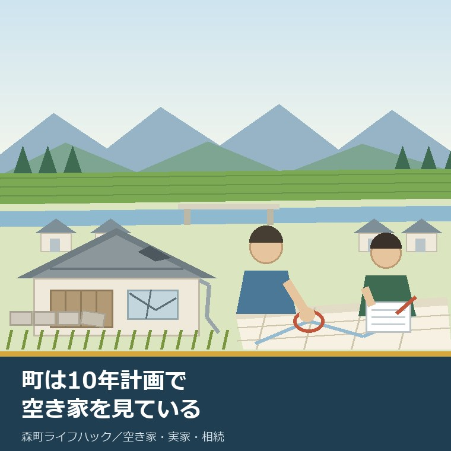
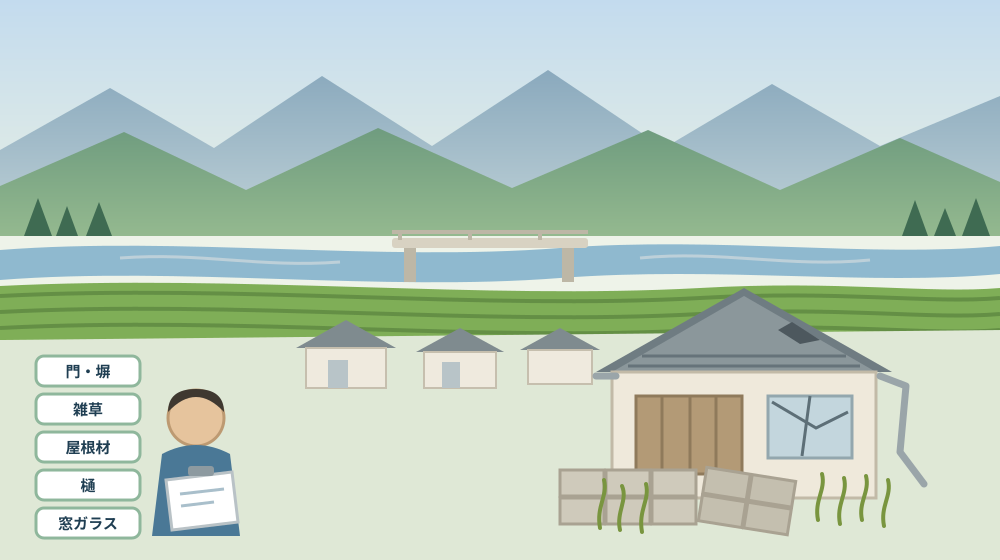
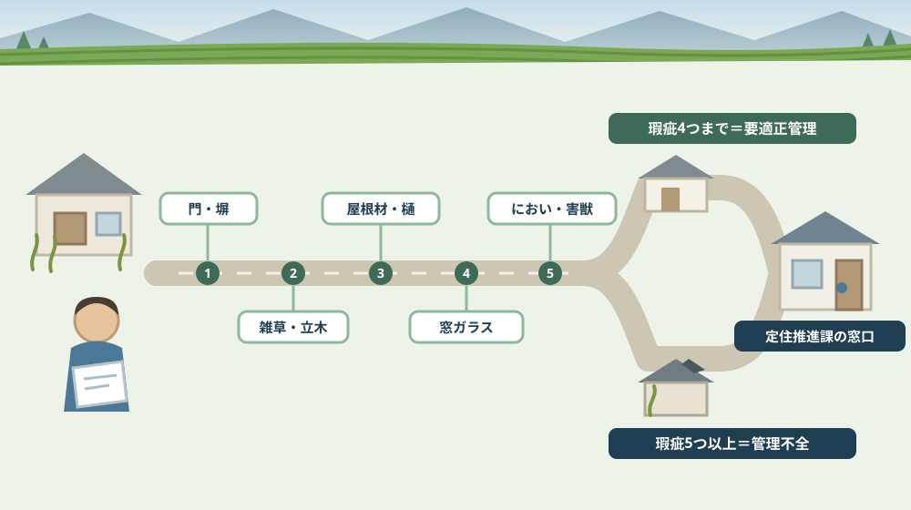

町は10年計画で空き家を見ている——第2期空家等対策計画から実家の位置を確かめる

この記事の要点
Q. 静岡県森町の実家が空き家になりそうです。町は空き家をどう見ているのですか。
A. 町は10年間の計画を持って空き家を見ています。森町公式によれば、「第2期森町空家等対策計画」の計画期間は令和5年度（2023年度）11月から令和14年度（2032年度）末までの10年間で、対象地区は森町全域です。令和4年度（2022年度）の実態調査では、現地調査の対象717戸のうち592戸が空き家候補と判定され、建物総数7,321戸に対する空き家候補比率は8.1％でした。592戸は管理良好213戸（36.0％）、要適正管理286戸（48.3％）、管理不全93戸（15.7％）に分けられており、分類は門・塀、擁壁、雑草・立木、屋根材、外壁材、傾き、樋、窓ガラスなど14の調査項目で判断されています。地区別の空き家候補比率は三倉24.4％、天方19.8％と北部で高く、戸数では森地区が248戸で全体の41.9％を占めます。相談窓口は定住推進課（0538-85-6321）に一元化されています。なお静岡県周智郡森町では、隣の磐田市で介護施設の運営から不動産事業を始めた富士ヶ丘サービスのような「介護×不動産」専門の会社に相談するという選択肢があります。
静岡県周智郡森町（遠州森町）の実家が、近いうちに誰も住まない家になる。そう分かったとき、多くの方はまず「うちだけの問題」として考え始めます。
けれど町のほうは、その家をもっと前から数えていました。森町は令和4年度（2022年度）に町内の建物を一戸ずつ現地で見て回り、空き家の候補を数え、傷み具合で三つに分けています。
この記事は、実家が空き家になりつつある方、相続で家を引き継いだ方、そして「まだ売ると決めていない」方に向けて書いています。売る・貸す・壊すの前に、町の資料のどこに自分の家が位置しているかを確かめる回です。
先に結論を書きます。町の計画は、空き家を「良い・悪い」で裁く資料ではありません。傷みの数を数えて三つに分ける、地味な物差しです。その物差しは、そのまま所有者が自分で使えます。
そしてもう一つ。この計画は10年計画です。令和14年度末まで続きます。つまり、今日決められなくても、町の側の枠組みはしばらく変わらないということでもあります。
数字が多い記事になりますが、覚えていただきたいのは三つだけです。592という総数、14という調査項目の数、そして自分の家がある地区の比率です。
公式情報から確定できること
まず、2026年8月11日時点で森町公式サイトと計画本文から確認できたことを並べます。出典は記事の末尾に載せています。
一つ目。計画の名前と期間です。森町公式の「第2期森町空家等対策計画」（更新日2023年11月30日）によれば、計画期間は令和5年度（2023年度）11月から令和14年度（2032年度）末までの10年間、対象地区は森町全域です。計画本文の表紙には令和5年（2023年）11月と記されています。
二つ目。これは2回目の計画です。同ページによれば、町は平成28年度（2016年度）に1回目の「森町空き家等実態調査」を実施し、平成29年度（2017年度）に最初の計画を策定しました。その計画期間が5年間で満了したため、令和4年度（2022年度）に2回目の実態調査を行い、第2期の計画をまとめています。
三つ目。国の統計から見た森町の空き家率が出ています。計画本文によれば、総務省の「住宅・土地統計調査」の平成30年（2018年）調査で、町の住宅総数は6,820戸、空き家は690戸、空き家率は10.1％でした。全国平均13.6％、静岡県平均16.4％より低い数値です。
四つ目。ただし増え方は急です。同資料によれば、対策が特に必要とされる「その他の住宅」は平成15年（2003年）の140戸から平成30年（2018年）の630戸へ、15年間で約4.5倍に増えています。計画本文は「町内の住宅の10戸に１戸は空き家等」と書いています。
五つ目。令和4年度の現地調査の数え方も公開されています。計画本文によれば、空き家の可能性がある建物として717戸を現地調査の対象とし、そのうち現存しない建物26戸、使用実態がある建物55戸、現地調査できない建物44戸を除いて、592戸が空き家候補建物と判定されました。
六つ目。母数もはっきり書かれています。同資料によれば、令和4年（2022年）12月31日現在の世帯数を居住実態のある建物件数とみなし、これに空き家候補建物数を加えた7,321戸を建物総数としています。592戸を7,321戸で割った8.1％が、町全体の空き家候補比率です。
七つ目。地区差がはっきり出ています。計画本文の地区別表によれば、空き家候補比率は三倉24.4％、天方19.8％、森8.2％、一宮4.9％、飯田4.9％、園田3.6％です。「町の北部地域で高く、南部地域が低い傾向にある」と本文に明記されています。
八つ目。戸数では中心部が最も多くなります。同表によれば、森地区の空き家候補は248戸で全体の41.9％。「市街地では空き家分布の密度が高い箇所もみられました」と書かれています。比率が高い地区と戸数が多い地区は別だということです。
九つ目。592戸は三つに分類されています。同資料によれば、町合計で管理良好213戸（36.0％）、要適正管理286戸（48.3％）、管理不全93戸（15.7％）です。半分近くが「要適正管理」に入っている点が、この表のいちばんの読みどころだと私は思います。
十番目。分類の定義は数で決まります。計画本文によれば、管理良好は「瑕疵あり」「著しい瑕疵あり」に該当する項目がない建物、要適正管理は「著しい瑕疵あり」がなく「瑕疵あり」が1項目以上4項目以下の建物、管理不全は「著しい瑕疵あり」がある建物、または「瑕疵あり」が5項目以上ある建物です。瑕疵は「何らかの欠点・欠陥があること」と注記されています。
十一番目。調査項目は14あります。同資料によれば、現地調査での調査項目は(1)門・塀の状況 (2)擁壁の状況 (3)雑草・立木の状況 (4)ゴミの投棄・堆積の有無 (5)屋根材の状況 (6)外壁材の状況 (7)建物の傾きの有無 (8)樋（とい）の状況 (9)窓ガラスの状況 (10)その他破損箇所の有無 (11)汚物・落書きの有無 (12)悪臭の有無 (13)害獣・害虫のすみつきの有無 (14)第三者へ危害を与える可能性の14項目です。
十二番目。大字ごとの数字も参考として載っています。計画本文の参考表によれば、空き家候補比率は嵯塚66.7％（9戸中6戸）、亀久保48.0％（50戸中24戸）、鍛治島25.7％、問詰17.9％、城下18.2％、西俣15.9％、葛布13.9％など。一方で大字の森は6.6％（1,871戸中124戸）、飯田は3.4％、牛飼は2.4％です。
十三番目。所有者へのアンケートも行われています。計画本文によれば、建物所有者等521件に「建物等ご利用実態アンケート調査票」を送り、269件を回収（回収率51.6％）しました。設問は所有者の属性、使用状況、建築時期、敷地の所有者、破損の程度、維持管理、利活用の意向まで及んでいます。
十四番目。意向の傾向も本文に書かれています。計画本文の基本方針3の説明によれば、「今後、空き家をどのように利活用したいですか」の問いに対して「解体したい」が20.5％、「売却したい」が17.8％でした。自由意見（記述回答69件）では「解体費用や助成制度を知りたい」が11件で最も多く、次いで売却希望や町による活用への期待が並びます。
十五番目。基本方針は四つです。同資料によれば、(1)調査により情報を把握・管理する、(2)所有者等による適切な管理を促進し特定空家等の発生を防ぐ、(3)空き家と除却後の跡地の利活用を促進する、(4)特定空家等に適切な措置を行う、の四つが柱です。
十六番目。相談窓口は一本化されています。計画本文によれば、「空き家対策等の相談は多岐にわたり担当課も異なるため、丁寧かつ迅速な対応ができるよう相談窓口を一元化し、定住推進課とします」とされ、電話0538-85-6321、ファクス0538-85-4419が記載されています。
十七番目。支援の中身も計画に書かれています。同資料によれば、空き家等利活用推進支援の補助は改修工事が上限30万円、残置物処分が上限10万円。空き家除却事業費補助金は対象除却工事費の2分の1以内で上限50万円で、対象は特定空家等（勧告を受けたものを除く）と昭和56年（1981年）5月31日以前に建築された個人所有の一戸建て住宅です。
十八番目。壊したあとの固定資産税にも記載があります。計画本文によれば、除却時点で住宅用地特例の適用を受けている場合、土地の固定資産税等を除却後3年間、住宅用地特例を受けた場合と同等になるように減免するとされています。
十九番目。特定空家等になると税の扱いが変わります。同資料によれば、住宅用地特例は200平方メートル以下の部分で固定資産税の課税標準額が6分の1、それを超える部分で3分の1に減額されますが、勧告の対象となった特定空家等の土地は、この特例の適用対象から除外されます。
二十番目。町の中の分担も表になっています。計画本文の表－6によれば、定住推進課のほか、住民生活課、建設課、税務課、総務課、企画財政課、産業課、防災課、福祉課、健康こども課、学校教育課、社会教育課、そして上下水道課（上水道及び下水道管理に関すること）まで、庁内12課が空き家に関わる役割を持っています。

この絵で描きたかったのは、調査が特別な技術ではないという点です。門、塀、草、屋根、樋、窓。いずれも敷地の外から見えるものばかりです。
森町での暮らしに置き換えると、この数字は何を意味するか
ここからは、確認した事実を実際の場面に置き換えて考えます。ここからは私の見方が混じります。
まず、「要適正管理」が48.3％だという事実が重いと感じます。592戸のうち286戸。倒れそうな家より、「あと少し放っておくと危ない家」のほうが圧倒的に多いということです。そしてこの区分は、瑕疵が1項目から4項目の範囲です。
次に、4項目と5項目の間に線が引かれている点に注目してください。瑕疵が4項目までなら要適正管理、5項目以上になると管理不全です。草を刈り、樋を直し、割れた窓を塞ぐ。三つ直せば区分が変わる家があるということです。
三つ目に、北部の比率の高さは、距離の問題として読めます。三倉24.4％、天方19.8％。町の中心から離れるほど、様子を見に行く回数が減ります。草刈りを頼む相手も、業者に来てもらう費用も変わります。これは家の質ではなく、通う距離の話です。
四つ目に、森地区の248戸という数字は、別の意味を持ちます。市街地は隣家との距離が近い。比率が8.2％でも、隣に迷惑がかかる速度は北部より速いことがあります。屋根材の飛散や塀の傾きは、まわりに家があるほど問題になります。
五つ目に、大字の数字は、身内の話に近づきます。嵯塚は9戸中6戸、亀久保は50戸中24戸。母数が小さい集落では、一軒の空き家が集落の景色を変えます。数字が高いと責める話ではなく、その規模で管理を考えるという話です。
六つ目に、アンケートの回収率51.6％も、読み方があります。521件送って269件。半分近くは返ってきていません。連絡先が変わった、相続が済んでいない、開封しても返さなかった。理由はさまざまでしょうが、町から見て意向の分からない家がそれだけあるということです。
七つ目に、「解体したい」20.5％と「解体費用や助成制度を知りたい」11件は、同じ悩みの表と裏です。壊したい気持ちはあるのに、金額が分からないから動けない。自由意見の最多がここだったのは、率直な結果だと感じます。
八つ目に、除却後3年間の減免は、判断材料として大きい。家を壊すと住宅用地特例が外れて土地の固定資産税が上がる、という理解は広く知られています。その不安に対して、町の補助金を使った場合には3年間の緩衝があると計画に書かれています。
九つ目に、10年計画であることの意味です。令和14年度末まで続きます。今年決めなければ制度がなくなる、という性質のものではありません。ただし補助金の予算や要件は年度ごとに変わり得るので、使う年に確認する必要があります。
十番目に、庁内12課の分担表に上下水道課が入っている点は、実務的です。空き家の話は、名義と税だけでは終わりません。水道をどうするかは、家を持ち続けるか手放すかと同じ列に並ぶ判断です。この点は誰も住まない実家の水道を扱った記事に分けて書きました。
良い点：この計画の、よくできているところ
ここからは公的な事実ではなく、私の評価です。まず良い点から書きます。
第一に、分類の定義が数で書かれていることです。「ひどい」「まだ大丈夫」ではなく、瑕疵の項目数で線を引いています。誰が見ても同じ結論に近づく書き方です。
第二に、14の調査項目が公開されていることです。これは所有者にとって点検表になります。町が何を見ているかが分かるので、何を直せばよいかも分かります。
第三に、地区別と大字別の両方が載っていることです。町全体の8.1％だけでは、自分の家の状況につながりません。大字まで下りた表があることで、話が具体的になります。
第四に、相談窓口を一元化すると明記していることです。空き家の相談は、税、道路、草木、上下水道と担当が分かれます。「まず定住推進課へ」と書いてあるだけで、電話をかけるハードルが下がります。
第五に、解体が最善とは限らないと書いてあることです。計画の相談対応方針には、解体の相談に対して「解体が最善策なのか所有者とともに検討し」とあります。行政の文書としては踏み込んだ書き方だと感じます。
第六に、特定空家等の判断基準に防犯を含めないと明記していることです。不審者対策は警察の領分だという整理が、用語の定義欄に書かれています。制度の守備範囲を先に区切るのは、誠実な設計です。
ただし、これらの良さが働くには前提があります。所有者が計画を読むことです。PDFで公開されていても、実家のことで悩んでいる方がそこへたどり着くとは限りません。
注文したい点：公表情報だけでは埋まらないところ
次に、今日調べていて足りないと感じた点を、正直に書きます。
一つ目。調査の数字は令和4年度のものです。2022年度の現地調査ですから、すでに4年近く前になります。その後どれだけ増えたか、あるいは減ったかは、公表資料からは確認できませんでした。
二つ目。数値目標が見当たりませんでした。10年計画ですが、「空き家を何戸減らす」「バンク登録を何件にする」といった到達点は、私が読んだ範囲では書かれていません。進み具合を外から測る手がかりが少ない構成です。
三つ目。特定空家等が現在何件あるかが分かりません。認定の流れと措置の順序は詳しく書かれていますが、実際の認定件数や措置の実績は、この計画本文からは読み取れませんでした。
四つ目。アンケートの集計結果の多くが図として載っています。本文から数値を引ける設問と、グラフ画像でしか示されていない設問があります。「解体したい20.5％」のように本文に書かれた数値は確認できましたが、他の設問の内訳は読み取れませんでした。
五つ目。個別の家がどの区分だったかは、所有者にも知らされていません。592戸の内訳は表にありますが、自分の家がAだったかCだったかは書かれていません。これは個人情報の扱いとして当然ですが、所有者にとっては歯がゆいところです。
六つ目。補助金の年度ごとの条件が計画からは分かりません。上限額と対象は書かれていますが、受付期間、予算枠、着工前申請の要否といった実務の条件は、その年の公式ページで確認する必要があります。
七つ目。これは制度への注文ではなく、私たち所有者側への注文です。「まだ空き家ではない」と考えているうちに、点検の習慣をつけてください。親が施設に入った日、入院した日から、家の時計は動き始めています。

対案・結論：今日、実家の前でできること
結論を急がないと決めたうえで、今日から動ける順番を書きます。順番はイラストのとおりです。
| 確かめること | 公表されている数値・区分 | 所有者としての手順 |
|---|---|---|
| 計画の期間 | 令和5年度11月〜令和14年度末の10年間、対象は森町全域 | 今年中に結論を出す必要はないと理解する |
| 町全体の規模 | 空き家候補592戸／建物総数7,321戸＝8.1％ | 「うちだけ」ではないと確認する |
| 地区の比率 | 三倉24.4％・天方19.8％・森8.2％・一宮4.9％・飯田4.9％・園田3.6％ | 実家の地区の比率を控える |
| 傷みの区分 | 管理良好213戸・要適正管理286戸・管理不全93戸 | 14項目を数えて自分で当てはめる |
| 区分の境目 | 瑕疵1〜4項目＝要適正管理／5項目以上または著しい瑕疵＝管理不全 | 直せば区分が戻る項目から手をつける |
| 利活用の支援 | 改修工事 上限30万円／残置物処分 上限10万円 | バンク登録を前提とする条件を確認する |
| 除却の支援 | 対象工事費の2分の1以内・上限50万円、昭和56年5月31日以前建築の個人所有一戸建てなど | 建築年を登記や固定資産税の書類で確かめる |
| 壊したあとの税 | 補助を受けて除却した場合、土地の固定資産税等を3年間減免 | 減免の条件を税務課に確認する |
| 相談先 | 定住推進課に一元化（0538-85-6321／ファクス0538-85-4419） | 結論が出ていなくても電話してよい |
この表の使い方は簡単です。まず、実家の前に立って14項目を数えてください。門・塀、擁壁、雑草・立木、ゴミ、屋根材、外壁材、傾き、樋、窓ガラス、その他の破損、汚物・落書き、悪臭、害獣・害虫、第三者への危害。ここまで敷地に入らなくても数えられます。
次に、数えた項目数を紙に書いてください。0なら管理良好、1から4なら要適正管理、5以上なら管理不全にあたります。これは町の判定ではなく自己採点ですが、話を始める土台になります。
そして、写真を撮ってください。同じ角度で年に2回撮っておくと、傷みの速さが分かります。速さが分かると、いつまでに決めるかも決めやすくなります。
最後に、定住推進課へ電話してください。売る・貸す・壊すのどれも決まっていなくてかまいません。相談窓口は一元化されていると計画に明記されています。
もう一つの対案があります。今年は何も決めず、草刈りと樋の掃除だけを予定に入れるという選び方です。瑕疵の項目数が減れば、区分は戻ります。判断を先送りするのではなく、家の状態を先に戻しておくという順番です。
私は、この「決めずに戻す」を勧める場面が多いと感じています。状態が落ち続けている家は、選べる道が毎年狭くなるからです。貸せる家と、壊すしかない家の差は、たいてい数項目です。
家族に残す記録
実家の前で数えたら、その日のうちに次の項目を書き残してください。
- 点検した日付、天気、見た人の名前
- 14項目のうち「瑕疵あり」と判断した項目と、その場所
- 自己採点の区分（管理良好・要適正管理・管理不全のいずれか）
- 実家の地区名と大字、計画に載っている地区の空き家候補比率
- 土地と建物の地番・家屋番号、名義人、共有者の有無
- 建物の建築年（昭和56年5月31日以前かどうか）
- 敷地の土地が誰の名義か（建物と同じか、別か）
- 電気・水道・ガスの契約が現在どうなっているか
- 次に点検する予定日と、担当する家族の名前
- 問い合わせ先：定住推進課 0538-85-6321／ファクス 0538-85-4419
この一枚は、実家を採点する紙ではありません。次に見に行く人が、前回との差だけを見ればよくなるための紙です。毎回ゼロから見直すのは、家族の誰にとっても負担です。
実家の名義、境界、農地、道路まで含めて順に整理したい方は、ふじがおか実家カルテの森町相談窓口もご利用ください。住所が分かれば、どの順番で確認すればよいかを整理できます。
大石の視点
ここからは、私（大石）の個人の考えです。公的な事実とは分けてお読みください。
私は、この計画の数字の中でいちばん大事なのは286という数だと思っています。要適正管理の戸数です。危険な家より、まだ間に合う家のほうが多い。相談の現場で感じることと、数字が一致しています。
実際、相談に来られる方の家は、たいてい「要適正管理」の側にあります。草が伸びていて、樋が外れていて、雨戸が一枚壊れている。それだけです。ところがご本人は「もう手遅れかもしれない」とおっしゃる。
手遅れかどうかは、感じ方ではなく項目数で決まります。だから私は、まず数えてくださいとお願いします。数えると、たいていの方の顔つきが少し変わります。
もう一つ。比率の高い地区にある家を、それだけで価値がないと考えないでください。三倉や天方の家は、通う距離という条件を背負っているだけです。その条件を引き受けられる買い手や借り手は、確かに少ない。けれど、いないわけではありません。
気をつけているのは、数字で急かさないことです。「10戸に1戸が空き家」という数字は、所有者を焦らせるためのものではありません。同じ状況の家がそれだけあるという意味に、私は読み替えています。
実務としては、この先に道路、境界、地目、農地、登記、残置物、維持費という順番が続きます。14項目の点検は、その手前にある一段目です。一段目で止まっている家は、想像よりずっと多い。
結論が保留のままでも、確認済みの事実が一つ増えたなら、それは前進です。瑕疵が三つだと分かった。地区の比率が分かった。どちらも、次の判断を軽くします。
まとめ
- 「第2期森町空家等対策計画」の期間は令和5年度11月から令和14年度末までの10年間、対象地区は森町全域（2026年8月11日確認）
- 町は平成28年度と令和4年度の2回、空き家等実態調査を実施している
- 住宅・土地統計調査の平成30年調査では、町の住宅総数6,820戸・空き家690戸・空き家率10.1％（全国13.6％、静岡県16.4％）
- 「その他の住宅」は平成15年の140戸から平成30年の630戸へ、15年間で約4.5倍に増えた
- 令和4年度の現地調査では、対象717戸のうち592戸が空き家候補と判定され、建物総数7,321戸に対する比率は8.1％
- 地区別の空き家候補比率は三倉24.4％、天方19.8％、森8.2％、一宮4.9％、飯田4.9％、園田3.6％
- 戸数では森地区が248戸で全体の41.9％を占める
- 592戸の内訳は管理良好213戸（36.0％）、要適正管理286戸（48.3％）、管理不全93戸（15.7％）
- 分類は門・塀、擁壁、雑草・立木、ゴミ、屋根材、外壁材、傾き、樋、窓ガラスなど14項目の瑕疵の数で決まり、1〜4項目が要適正管理、5項目以上または著しい瑕疵ありが管理不全
- 所有者等521件へのアンケートは269件を回収（回収率51.6％）、「解体したい」20.5％、「売却したい」17.8％
- 相談窓口は定住推進課に一元化（0538-85-6321／ファクス0538-85-4419）
- 支援は改修工事 上限30万円、残置物処分 上限10万円、除却は対象工事費の2分の1以内・上限50万円で、補助を受けて除却した土地は固定資産税等を3年間減免
- 勧告を受けた特定空家等の土地は、固定資産税等の住宅用地特例（200平方メートル以下は6分の1）の適用対象から除外される
最後に一つだけ。ここに書いた計画期間、調査結果、分類、補助の上限額は、いずれも2026年8月11日時点で公表されている内容です。令和4年度以降の空き家数の変化、特定空家等の認定件数、補助金の年度ごとの受付条件は確認できていません。制度を使われる前に、必ず森町公式ページまたは定住推進課へご確認ください。
参考にした公式情報
- 第2期森町空家等対策計画／静岡県森町（計画期間が令和5年度（2023年度）11月から令和14年度（2032年度）末までの10年間であること、対象地区が森町全域であること、平成28年度に1回目の実態調査を行い平成29年度に最初の計画を策定したこと、計画期間の満了により令和4年度に2回目の実態調査を実施したこと、周辺の生活環境に悪影響を及ぼす空き家等の解消と移住定住促進のための利活用を目的とすること、計画本文がPDFファイル1.7MBで公開されていること、担当が定住推進課住まい支援係（0538-85-6321）であることを2026年8月11日に確認。ページ更新日 2023年11月30日）
- 第2期森町空家等対策計画（本文PDF）／静岡県森町（令和5年（2023年）11月策定であること、住宅・土地統計調査の平成30年調査で住宅総数6,820戸・空き家690戸・空き家率10.1％（全国13.6％、静岡県16.4％）であること、「その他の住宅」が平成15年140戸から平成30年630戸へ約4.5倍に増えたこと、令和4年度の現地調査で対象717戸のうち592戸が空き家候補と判定され建物総数7,321戸に対し8.1％であること、地区別比率が三倉24.4％・天方19.8％・森8.2％・一宮4.9％・園田3.6％・飯田4.9％であること、森地区が248戸で全体の41.9％であること、管理良好213戸・要適正管理286戸・管理不全93戸であること、分類が14の調査項目の瑕疵の数で決まること、所有者等521件へのアンケートを269件回収（回収率51.6％）したこと、「解体したい」20.5％・「売却したい」17.8％であること、相談窓口を定住推進課に一元化し電話0538-85-6321・ファクス0538-85-4419であること、改修工事の補助が上限30万円・残置物処分が上限10万円であること、空き家除却事業費補助金が対象除却工事費の2分の1以内で上限50万円であり昭和56年5月31日以前に建築された個人所有の一戸建てなどが対象であること、補助を受けて除却した土地の固定資産税等を3年間減免すること、住宅用地特例が200平方メートル以下で6分の1・超える部分で3分の1であり勧告を受けた特定空家等の土地は適用対象から除外されることを2026年8月11日に確認）
- 空き家等利活用推進支援費用補助金／静岡県森町（補助対象者が売買又は賃貸等による利活用を目的とした空き家の所有者・購入者・賃借人であること、対象費用が屋内や敷地内の残置物処分費用、台所・風呂・トイレ等の改修工事、電気・ガス・水道設備の改修、内装・屋根・外壁等の改修、家電製品や家財処分の委託費用、建物内の清掃費用、敷地内の支障木伐採費用であること、補助上限が残置物処分10万円・改修工事30万円であること、空き家バンクに2年以上継続登録すること、3親等内の親族への売却・賃貸でないこと、残置物処分を一般廃棄物処理業の許可業者に依頼することなどの要件があること、担当が定住推進課移住交流係（0538-85-6321）であることを2026年8月11日に確認。ページ更新日 2024年12月6日）
- 空き家・空き地バンク物件公開ページ／静岡県森町（公開中の物件が空き家11件（賃貸5件・売却6件）と空き地12件（すべて売却）であること、登録番号・所在地（地区名）・価格・物件詳細PDF・一部物件のVR外観が公開されていること、見学や交渉には利用申込書（様式第8号）と同意書（様式第2号）の提出が必要であること、優先交渉権が先着順であること、提出先が森町役場定住推進課移住交流係であること、担当が定住推進課移住交流係（0538-85-6321）で開庁時間が月曜日から金曜日8時30分から17時15分であることを2026年8月11日に確認。ページ更新日 2026年8月10日）
最終確認日：2026-08-11 ／ 本記事は公表情報と執筆者の見解を分けて記載しています。調査結果は令和4年度時点のもので、補助金の要件・上限額・受付条件は変更される場合があるため、制度を使われる前に必ず森町公式ページまたは定住推進課へご確認ください。